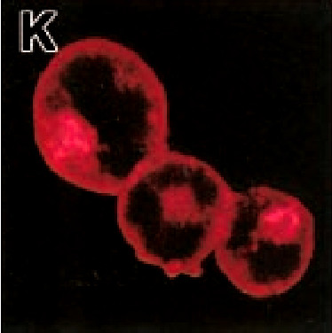
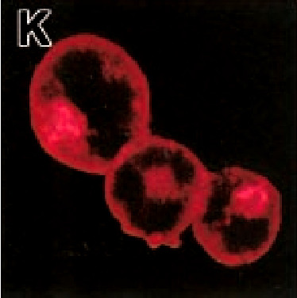

In our lab we investigate the fundamental questions of life history theory: How do organisms allocate resources to the competing demands of growth, reproduction, and somatic maintenance? How do organisms use cues in their environments to predict future demands? How do early environments affect health and well-being later in life? How does our modern environment differ from the conditions under which we evolved, and what are the consequences of our novel environment on health and ontogeny?
We focus on both field and laboratory work to examine human biology and behavior in ecological context. In the lab we measure hormones, white blood cells, and other biomarkers to characterize stress responses and life history allocations. In the field we study pathogen exposure, social structure, stress, disgust and behavioral immunity, and lifestyle change through market integration and globalization.
If you are interested in applying to work with me, please email me. Often I'll ask you to set up a Zoom meeting so we can chat and see if it's a good fit.
We focus on both field and laboratory work to examine human biology and behavior in ecological context. In the lab we measure hormones, white blood cells, and other biomarkers to characterize stress responses and life history allocations. In the field we study pathogen exposure, social structure, stress, disgust and behavioral immunity, and lifestyle change through market integration and globalization.
Prospective Graduate Students
I work with students with a wide variety of interests in human biology, evolutionary psychology, and behavioral ecology. I am particularly interested in students who want to work on modeling of life history trade-offs, immune function, and diseases, students interested in behavioral immunity and disgust, students who are interested in field work, and students who are able to form hypotheses about biology and behavior from an adaptationist or evolutionary perspective.If you are interested in applying to work with me, please email me. Often I'll ask you to set up a Zoom meeting so we can chat and see if it's a good fit.
Media and News
- Immune function can look pretty different in people exposed to many pathogens and parasites
- Wondering how worms might affect your fertility? Coverage from Science, NY Times, BBC and others.
- ScienceNews covers our paper on antagonism between helminths and giardia.


 



 Utila is an island off the coast of Honduras with an eclectic history. The island measures only 11 km by 4 km, yet is home to a number of distinct social and ethnic groups. These include Spanish-speaking mestizo immigrants from the mainland, Utilian descendants of British and Americans who settled in the late 19th century, and ex-pats who come to Utila from the United States and elsewhere for dive tourism. According to local informants, Americans come to Utila with "the immune system of an infant". That is, they are highly susceptible to local parasites and pathogens, which are common due to lack of public health infrastructure.
Utila is an island off the coast of Honduras with an eclectic history. The island measures only 11 km by 4 km, yet is home to a number of distinct social and ethnic groups. These include Spanish-speaking mestizo immigrants from the mainland, Utilian descendants of British and Americans who settled in the late 19th century, and ex-pats who come to Utila from the United States and elsewhere for dive tourism. According to local informants, Americans come to Utila with "the immune system of an infant". That is, they are highly susceptible to local parasites and pathogens, which are common due to lack of public health infrastructure. Shuar are indigenous Amazonians of neo-tropical Ecuador and northeastern Peru who traditionally lived in scattered households across the Paute and Upano River Valley between the eastern Andean foothills and the Cutucu range. As trade was established with non-Shuar (Colonos) in the 1890s, Shuar expanded eastward. They now live on both sides of the Cutucu and throughout the Upano River Valley.
Shuar are indigenous Amazonians of neo-tropical Ecuador and northeastern Peru who traditionally lived in scattered households across the Paute and Upano River Valley between the eastern Andean foothills and the Cutucu range. As trade was established with non-Shuar (Colonos) in the 1890s, Shuar expanded eastward. They now live on both sides of the Cutucu and throughout the Upano River Valley.